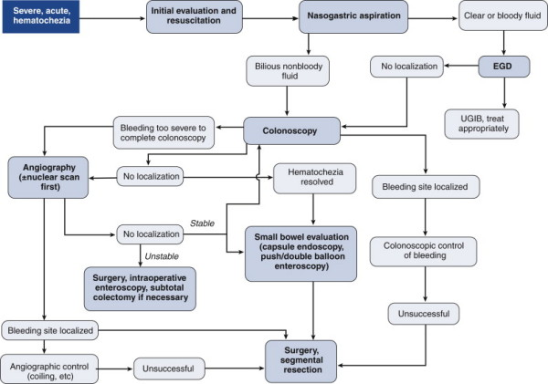

Lower GI Bleed: Strategy
DEFINITION
Bleeding from the GI tract distal to the ligament of Treitz
D E A B M I M
EPIDEMIOLOGY
See causes.
D E A B M I M
AETIOLOGY
(%s are for major / massive
bleeding)
Congential - Meckels
Anal conditions (5%)
Divertic (33%)
Colitis (20%)
- incl ischaemia
Tumours, benign and malignant (20%)
Angiodysplasia (10%)
Trauma
Iatrogenic - e.g. polypectomy haemorrhage.
Other surgical
D E A B M I M
BIOLOGICAL BEHAVIOUR
Divertic
Often from R sided lesions as well as L
Risk fx include diabetes and anticoagulants
Usually with painless haematochezia
70-90% cease spontaneously, but 20%+ rebleed
Inflammatory changes are classically absent
Neoplasm
Erosions / ulcerations
Tends to be low grade and recurrent and amenable to prep and scope
Haemorrhagic Colitis
Many pathologies
Friable mucosa
Presents abruptly, accompanied by crampy pain and diarrhoea
Infective
Agents include E coli, Shigella species, Campylobacter jejuni,
Entamoeba histolytica
Ischaemic
Acute onset, often pain severe and tenderness not so bad.
Bleeding usually self limiting, sometimes not.
IBD
Bleeding usually pretty minor; bloody diarrhoea.
Angiodysplasia
Small vascular malformations from low grade obstruction of
submucosal veins.
Increase with age.
May occur throughout colon, but most commonly found in the caecum.
Presentation similar to divertics
- but venous so tends to be lower volume, less brisk, often occult
Polypectomy Haemorrhage
Early from inadequate cauterization; delayed from sloughing of
eschar.
Risk factors include large, sessile, right-sided polyps and
resumption of anticoagulants.
Should undergo stabilization and immediate colonoscopy.
Surgical Causes
e.g. Aortoenteric fistulae
Anastomotic bleeds
- uncommon, tends to be self-limited, sometimes not. Endoscopic
evaluation.
D E A B M I M
MANIFESTATIONS
Haematochezia
Passage of red, maroon blood and clots
D E A B M I M
INVESTIGATIONS
See below
D E A B M I M
MANAGEMENT

Note
Most common cause of hematochezia is still upper GI
bleeding
- may be no haematemesis
Put in a nasogastric tube and aspirate.
If non-bloody bile then proceed with lower GI investigations.
Else prioritize UGI workup.
Classify
Minor
- stable; clinic management
- usually anorectal issues or colitis
Major
- unstable, 2u blood
Massive
- 10u blood
1. Resuscitate and Stabilize
CCrISP principles
2 large cannulae, resus.
Blood, transfusion trigger depends on comorbidities and age.
2. Colonoscopy
Initial examination of choice, but sometimes precluded by severe
bleeding.
- in lesser bleeding can give a rapid purge colonoscopy
Advantage is localization and treatment / biopsy.
- Adrenaline injection, coagulation, clipping, argon coagulation,
band ligation of haemorrhoids.
- May obviate need for operative resection.
Disadvantage is visualization and risk of perforation.
3. CT Angiography / Angiography
Important diagnostic tool.
Images entire mesenteric vascular system with high specificity but
low sensitivity
Requires bleeding rate of at least 1ml/min
- down to 0.5 ml/min with modern helical scanners
Once localized can move to therapeutic angiography
- superselective transcatheter embolization is preferred therapy
- Vessel occlusion with microcoils or gelatin foam
- occasionally can provoke local bleeding by anticoagulation
Disadvantages include access site complications, contrast
nephropathy (can give NAC 400mg qid; ~soft evidence), distal
embolization, bowel ischaemia (rarer with superselective
approaches).
4. Nuclear Studies?
Technetium labelled RBC scans
Serial scans for source identification.
Sensitive; down to 0.1ml/min but difficult to interpret and
localize.
Meckel scan in children.
5. Small bowel evaluation?
May be necessary
Push enteroscopy allows
visualization of first 80cm of jejunum.
Capsule endoscopy:
Diagnostic procedure of choice in obscure GI bleeding.
Very well tolerated and high diagnostic yeild.
But long evaluation and no therapeutic potential.
Double balloon enteroscopy
New approach to visualized whole small bowel.
Need for sedation, general anaesthesia and specialist lab.
Barium Studies
Avoid it if any chance of needing surgery.
6. Surgery
Role has been controversial
Procedure of last resort and increasingly uncommon to need it.
Indication
Getting close if 4-6u over 24h or >10u overall. Even then,
depends what has been tried.
Exploratory laparotomy +/- intraoperative enteroscopy.
There is no role for blind
segmental resection
With successful preop localization, consider segmental resection
acknowledging higher rebleed risk (up to 10%) than subtotal
colectomy
Can sometimes see SB source
through wall; dark red.
Recurs in 25%.
D E A B M I M
REFERENCES
Cameron 10th